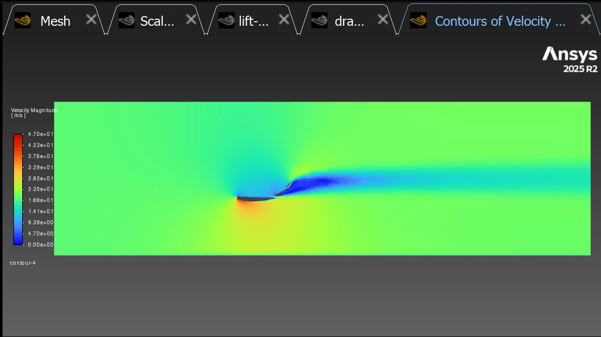
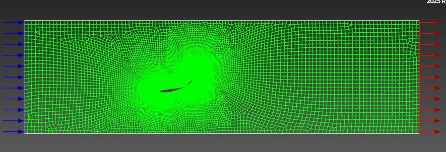
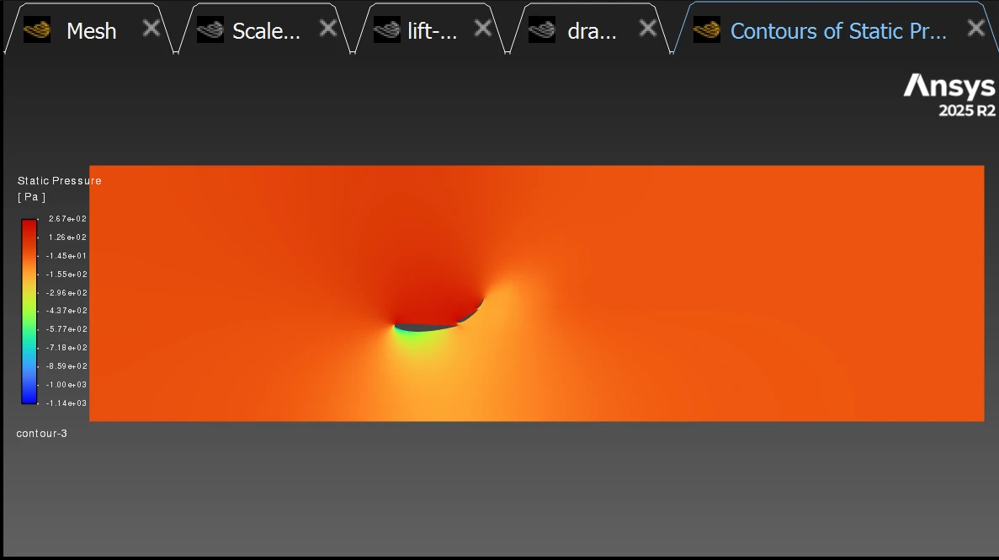
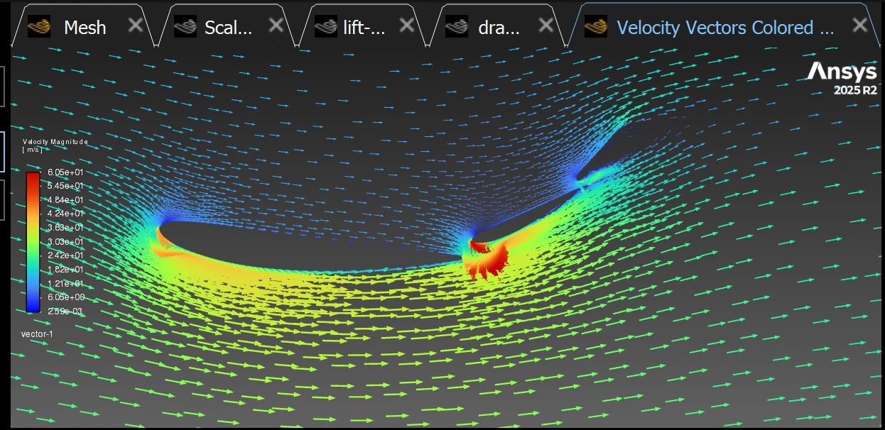
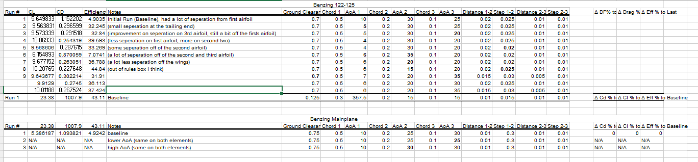

NER
Rear-wing airfoil stack analysis
For NER’s rear wing, I wanted to find the angle of attack and airfoil stack dimensions that would give us useful downforce for the drag the wing creates. Changing one element also changes the air reaching the next, so the elements have to be considered together. I used ANSYS CFD to study that interaction.

Reading the flow field
The pressure difference across an airfoil produces a force on the wing. I used the pressure contours to see where that load developed and the velocity plots to see how the air left the section. Together, those views helped me interpret what a change in angle or stack geometry could mean for the next element.
Project gallery
Scroll through the images or use the controls.



Which stack would I take forward?
My pick for the next design check is Run 4. In the Benzing 122-125 sweep, its three elements were set at 4°, 30° and 20°, with chord dimensions of 0.5, 0.2 and 0.1 in the sheet’s units. It produced a lift-coefficient magnitude of 10.069 and a drag coefficient of 0.254. That gives 39.59 units of downforce per unit of drag, the highest ratio among the stack runs without a rule-box concern recorded.
Run 5 makes the choice clearer. With the same angles and chords but different spacing, it produced less downforce and more drag, bringing its efficiency down to 33.27. Run 7 reached 36.79. The notes for Run 4 also show a trade-off worth checking in the next iteration. Separation decreased on the first element but increased on the second.
Run 8 led the sweep on aerodynamics alone at 44.84, about 13% above Run 4. The run sheet flags a possible rule-box violation. I’d check its geometry against the permitted envelope before ruling it out. If it fits, it becomes the stronger candidate on efficiency. The sweep held chord lengths constant, so these results support an angle and spacing choice within this stack, while chord optimization remains open.
